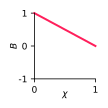
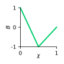

\[
\begin{aligned}
\frac{\mathrm{d}\mathbf{u}}{\mathrm{d}t} & = -\nabla p + B(\chi)\mathbf{e}_y + \frac{1}{\mathrm{Re}}\nabla^2\mathbf{u} \\
\nabla\cdot\mathbf{u} & = 0 \\
\frac{\mathrm{d}\chi}{\mathrm{d}t} & = D\nabla^2\chi
\end{aligned}
\]
$\mathrm{Re}=1000$
$D=10^{-5}$
without buoyancy reversal

with buoyancy reversal
